ECG Blog #395 — Không có lời giải thích đơn giản...
Bản ghi trong Hình 1 được gửi đến tôi để nhờ đọc. Đúng như tiêu đề của bài Blog hôm nay — Không có lời giải thích đơn giản nào cho tất cả những gì đang diễn ra trong bản ghi đầy thử thách này. BẠN đã sẵn sàng nhận thử thách chưa?
- Tôi thấy phần khó nhất của bản ghi hôm nay là xác định nguyên nhân của nhát "X". Như tôi giải thích dưới đây — tôi cho rằng khó có khả năng nhát "X" là một nhát bộ nối đơn lẻ, hơi gia tốc.
- BẠN có thể đưa ra một lời giải thích hợp lý hơn không?

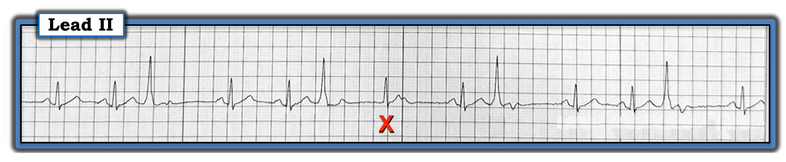
=================================
LƯU Ý: Mặc dù việc xác định nguyên nhân của nhát "X" liên quan đến một số khái niệm nâng cao — ca hôm nay cũng ôn lại những điểm MẤU CHỐT trong đánh giá bất kỳ rối loạn nhịp nào — vì vậy, bất kể kinh nghiệm đọc rối loạn nhịp của bạn ở mức nào — tôi mong bạn sẽ theo tôi đến cùng!
=================================
BẮT ĐẦU NHƯ THẾ NÀO?
Những ai thường xuyên theo dõi ECG Blog của tôi đều biết tôi luôn nhấn mạnh một loạt điểm dễ áp dụng để giúp đọc bất kỳ nhịp nào. Gồm những điểm sau:
- NẾU một rối loạn nhịp có nhiều hơn một đặc điểm (tức là, khi bản ghi không phải là nhịp xoang đơn thuần) — thì hãy NHÌN xem có nhịp nền hay không?
- NẾU trong nhịp có những yếu tố dễ đọc hơn, bên cạnh những yếu tố khó hơn — Hãy bắt đầu với các yếu tố DỄ HƠN (và để các yếu tố khó hơn lại sau cùng). Bạn sẽ thường ngạc nhiên thú vị khi thấy lời giải thích cho các yếu tố khó hơn trở nên rõ ràng một khi bạn đã đọc xong một số yếu tố ít khó hơn.
- Đánh số các nhát. Như vậy bạn và đồng nghiệp có thể chắc chắn rằng mọi người đang nói về cùng (các) phần của bản ghi. (Việc này cũng giúp BẠN tiết kiệm thời gian — vì bạn có một điểm tham chiếu được đánh số để nhanh chóng tìm lại phần bản ghi mà bạn đang xem).
- Đánh dấu các sóng P rõ ràng.
=================================
Hãy NHÌN lại bản ghi hôm nay trong Hình 2 — trong đó tôi đã đánh số các nhát và đánh dấu các sóng P xoang rõ ràng bằng mũi tên ĐỎ.
- Có nhịp nền trong Hình 2 không?
- Phần "dễ nhất" để đọc trong bản ghi hôm nay là gì?

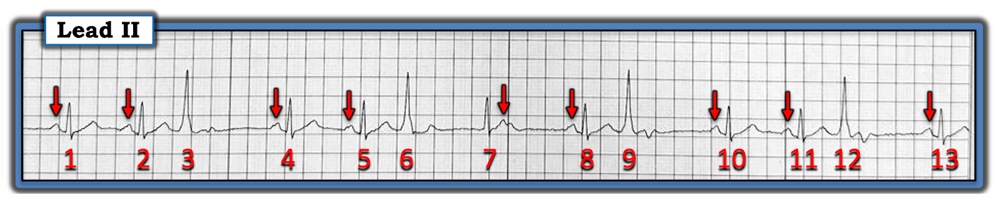
Nhịp nền:
Bước đơn giản là đánh dấu những sóng P rõ ràng trong Hình 2 — cho phép chúng ta nhanh chóng nhận ra rằng nhịp nền trong bản ghi hôm nay là nhịp xoang.
- Việc nhịp nền là nhịp xoang — được khẳng định bởi các mũi tên ĐỎ trong Hình 2 xuất hiện trước các nhát #1,2; 4,5; 8; 10,11; và 13 — mỗi sóng P này đều có hình dạng tương tự và cùng một khoảng PR bình thường như nhau đứng trước phức bộ QRS theo sau mỗi sóng P đó.
- Sóng P có 1 mũi tên ĐỎ trong Hình 2 mà không có phức bộ QRS theo sau — là sóng P được nhận ra nhờ một "bướu" nhỏ phụ nhô lên trong đoạn ST của nhát #7 (tức là, đây là mũi tên ĐỎ thứ 5 trong Hình 2).
- Chúng ta biết rằng "bướu" phụ này trong đoạn ST của nhát #7 chính là một sóng P xoang — vì khoảng cách từ "bướu" nhỏ này đến sóng P xoang kế tiếp — gần như bằng khoảng cách giữa các sóng P đứng trước các nhát #1-2; các nhát #4-5; và các nhát #10-11.
=================================
Lời nhắc hữu ích: Dùng compa đo (calipers) giúp đọc bất kỳ rối loạn nhịp phức tạp nào dễ dàng hơn rất nhiều (và nhanh hơn)! Đặc biệt — dùng compa đo sẽ giúp trả lời câu hỏi tiếp theo dễ hơn nhiều:
=================================
CÂU HỎI:
- Khi bạn NHÌN lại Hình 2 — Bạn có thấy dấu hiệu nào của các sóng P khác nữa không?
TRẢ LỜI:
- Trong Hình 3 — tôi đã thêm các mũi tên XANH vào nhịp hôm nay, để cho thấy việc dùng compa đo giúp nhìn ra một nhịp nhĩ nền đều như thế nào (tức là, các chỗ lệch sóng (deflection) do sóng P đúng lúc gây ra, làm biến dạng sóng ST-T của các nhát #3,6,9 và 12, được thấy ngay dưới mỗi mũi tên XANH).

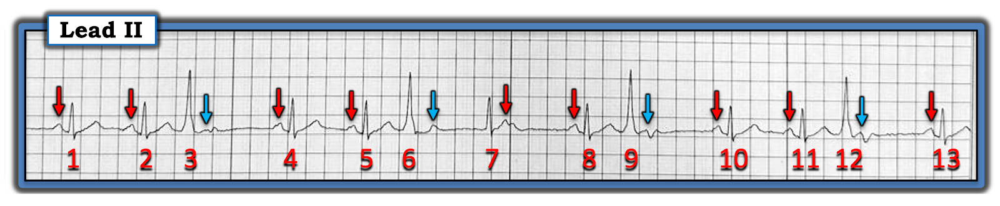
=================================
LƯU Ý: Khoảng P-P giữa các mũi tên màu không đều tuyệt đối. Như thường gặp — có thể có loạn nhịp xoang nhẹ. Dù vậy — hẳn đã rõ rằng "chủ đề" của các sóng P trong Hình 3 là một nhịp xoang nền gần như đều.
=================================
Còn các nhát rộng trong Hình 3 thì sao?
Đến đây — nên xem xét lại những phần của bản ghi hôm nay mà chúng ta đã xác định được.
- Nhịp nền trong Hình 3 là nhịp xoang (tức là, các nhát #1,2; 4,5; 8; 10,11; và 13 đều rõ ràng là nhát dẫn truyền từ xoang).
- Các nhát #3,6,9 và 12 rộng, hình dạng rất khác so với các nhát dẫn truyền từ xoang — và không có sóng P đứng trước. Điều này xác định các nhát #3,6,9 và 12 là PVC (ngoại tâm thu thất — Premature Ventricular Contractions) — cho đến khi chứng minh được điều ngược lại.
- ĐIỂM THEN CHỐT (PEARL) #1: PVC có thể dẫn truyền ngược dòng về nhĩ hoặc không. Khi PVC dẫn truyền ngược dòng — nó sẽ khử cực nhĩ, qua đó tái lập lại (reset) nút SA. Kết quả là — sẽ có một khoảng trễ trước khi sóng P xoang kế tiếp xuất hiện.
- Ngược lại, khi PVC không dẫn truyền ngược dòng — sóng P xoang kế tiếp thường sẽ xuất hiện đúng lúc! Đây chính xác là điều chúng ta thấy với các mũi tên XANH trong Hình 3 — cụ thể là các sóng P xoang đúng lúc tiếp diễn suốt toàn bộ bản ghi!
- ĐIỂM THEN CHỐT (PEARL) #2: Việc các nhát rộng xuất hiện sớm trong Hình 3 không tái lập lại nút SA chứng minh rằng các nhát #3,6,9 và 12 là PVC! Đó là vì nếu các nhát sớm này là PAC hoặc PJC dẫn truyền lệch hướng — thì các nhát trên thất sớm này hẳn đã tái lập lại nút SA!
Tổng Hợp Lại Tất cả:
Chúng ta đã giải thích được gần như mọi thứ trong nhịp hôm nay — ngoại trừ nhát #7, là một phức bộ QRS hẹp không có sóng P nào đứng trước.
- Xin nhấn mạnh: NẾU bạn chỉ đi được đến đây — tức là, nhịp trong bản ghi hôm nay là nhịp xoang với PVC thường xuyên — thì điều này rõ ràng đã là đủ để xử trí lâm sàng phù hợp cho bệnh nhân này.
- NHƯNG — Nếu bạn tò mò muốn biết điều tôi cho là lời giải thích có khả năng nhất cho nhát #7 — Hãy đọc tiếp!
=================================
THỬ THÁCH trong nhịp hôm nay:
Phần tiếp theo là phần nâng cao của rối loạn nhịp hôm nay. Để rõ ràng, trong Hình 4 — tôi đã đặt tên cho từng sóng P trong bản ghi này.
- Thoạt nhìn — việc không có sóng P nào đứng trước nhát #7 gợi ý rằng phức bộ QRS hẹp này (có hình dạng QRS giống hệt các nhát dẫn truyền từ xoang khác) là một nhát bộ nối.
- Tuy nhiên, nếu nhát #7 là một ổ thoát bộ nối hơi gia tốc — thì tôi đã kỳ vọng các nhát #4, 10 và 13 (là những nhát có khoảng R-R dài hơn đứng trước) — cũng sẽ là nhát thoát bộ nối thay vì là nhát dẫn truyền từ xoang.

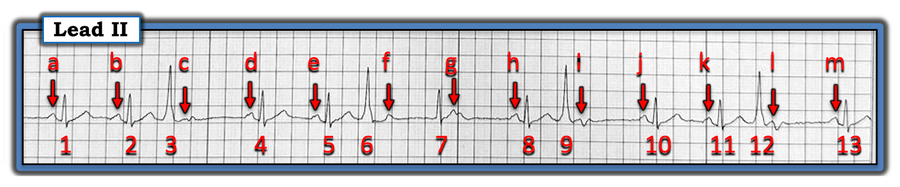
=================================
Minh họa bằng Giản đồ bậc thang:
Về mặt học thuật — tôi thực sự bị cuốn hút bởi nhịp hôm nay. Nhưng đến lúc này, vì tôi chưa giải thích được mọi đặc điểm trên điện tâm đồ — tôi cần vẽ một giản đồ bậc thang (laddergram). Tôi xin nhấn mạnh rằng tôi hầu như luôn có thể nhận ra nhanh và chính xác cơ chế có khả năng của phần lớn các nhịp phức tạp mà không cần đến giản đồ bậc thang. Bản ghi hôm nay là một ngoại lệ, ở chỗ tôi cần xem liệu với sự hỗ trợ của giản đồ bậc thang, tôi CÓ THỂ tìm ra một cơ chế hợp lý để giải thích nhịp bất thường này hay không.
- Chú thích nối tiếp qua 8 Hình tiếp theo minh họa quá trình suy nghĩ của tôi khi dựng giản đồ bậc thang này. (Xem ECG Blog #188 để ôn lại cách đọc và/hoặc vẽ giản đồ bậc thang).
- XIN NHẤN MẠNH — Giản đồ bậc thang này khó vẽ, như tôi giải thích dưới đây. Dù vậy — tôi hy vọng rằng ngay cả những độc giả ít kinh nghiệm với giản đồ bậc thang cũng sẽ theo được lập luận của tôi để đi đến lời giải thích hợp lý nhất cho nhát #7.
=================================

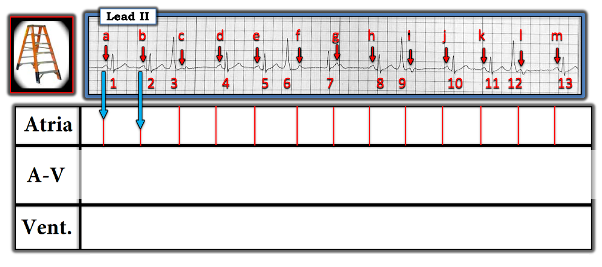

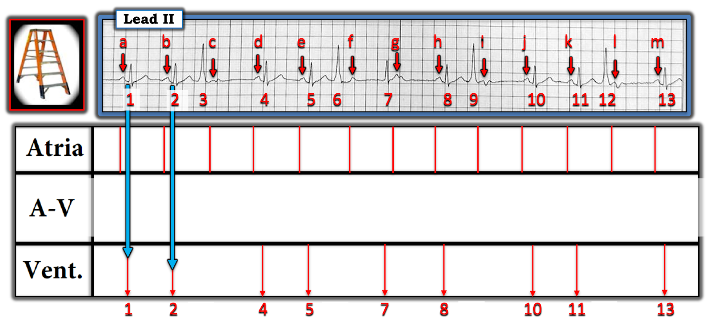

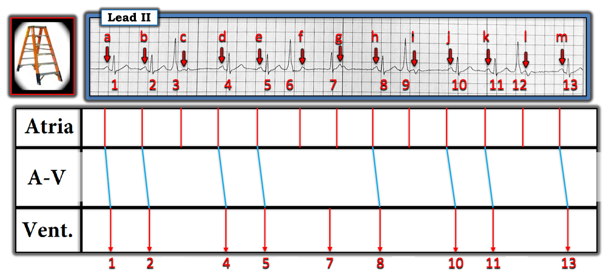

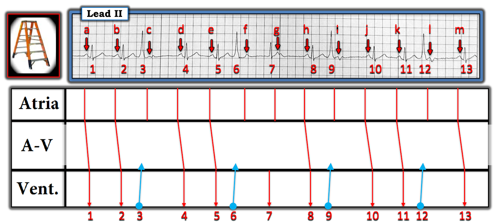

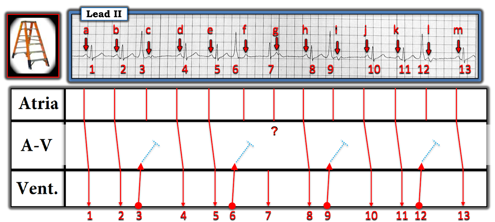

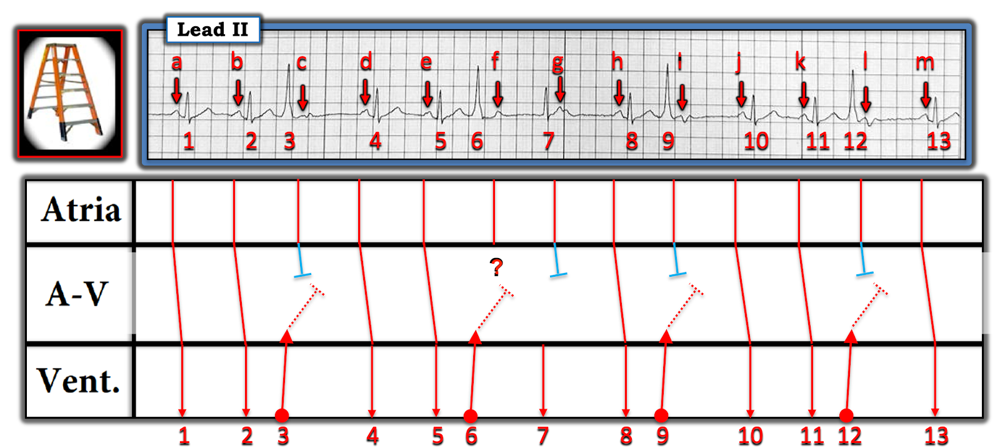
— — — —
Điểm MẤU CHỐT: Tôi cũng thêm một đầu chặn XANH cho sóng P "g". Vì sóng P "h" rõ ràng là dẫn truyền từ xoang — nên sóng P "g" không thể nào được dẫn truyền, vì không có phức bộ QRS nào sau sóng P "g" có thể là nhát được dẫn truyền. Vì lý do này — tôi thêm một dấu hỏi ( ? ) dưới sóng P "f ", vì đây là sóng P duy nhất còn lại chưa được giải thích.

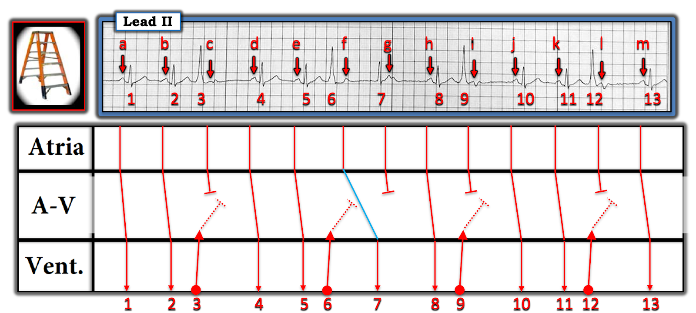

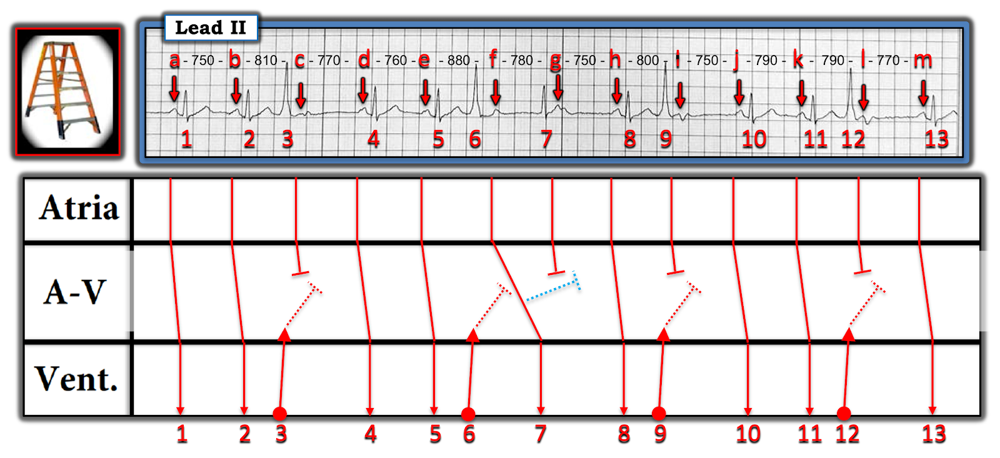
— — — —
Câu hỏi MẤU CHỐT: Tại sao sóng P "f" có thể đi qua được Tầng Nút AV — trong khi các sóng P "c", "i" và "l" lại bị chặn bởi dẫn truyền ngược dòng từ các PVC #3,9 và 12?
— — — —
TRẢ LỜI: Việc có loạn nhịp xoang nền ảnh hưởng đến thời điểm trong Thời kỳ trơ mà các sóng P c,f,i và l xuất hiện. Lưu ý rằng khoảng P-P dài nhất là 880 msec. nằm giữa các sóng P "e" và "f " — điều này cho thêm một chút thời gian để các đặc tính dẫn truyền hồi phục, và đó là lý do sóng P "f" có thể dẫn truyền để tạo ra nhát #7, dù với khoảng PR rất dài.
=================================
LƯU Ý: Học cách vẽ Giản đồ bậc thang là một thử thách. Tôi hoàn toàn thừa nhận rằng tôi đã mất nhiều năm mới cảm thấy thành thạo kỹ năng này. Dù vậy — học cách đọc giản đồ bậc thang không khó! Hy vọng rằng ngay cả những độc giả ít kinh nghiệm trong lĩnh vực này cũng đã hiểu được lập luận của tôi trong việc thiết kế giản đồ bậc thang cho rối loạn nhịp phức tạp hôm nay.
- Tôi ôn lại những điều cơ bản về đọc và vẽ giản đồ bậc thang trong ECG Blog #188 của tôi. Tôi cũng đưa vào đường dẫn tới hơn 90 giản đồ bậc thang từng bước mà tôi đã thêm vào ECG Blog qua nhiều năm — để bất kỳ ai muốn luyện đọc và/hoặc vẽ giản đồ bậc thang đều có một kho tư liệu phong phú để thực hành.
- Như mọi khi — tôi hoan nghênh các câu hỏi và/hoặc bình luận về bài ECG Blog hôm nay! CẢM ƠN bạn đã quan tâm!
=================================
==================================
Lời cảm ơn: Xin cảm ơn Mayan Kain (từ Tel Aviv, Israel) đã cung cấp ca bệnh và bản ghi này.
==================================
Các bài ECG Blog liên quan đến ca hôm nay:
- ECG Blog #205 — Ôn lại Cách tiếp cận Hệ thống của tôi trong đọc điện tâm đồ 12 chuyển đạo.
- ECG Blog #185 — Ôn lại Cách tiếp cận Ps, Qs, 3R để đọc nhịp một cách hệ thống.
- ECG Blog #188 — Ôn lại cách đọc và vẽ giản đồ bậc thang (kèm ĐƯỜNG DẪN tới hơn 90 ca có giản đồ bậc thang — nhiều ca có minh họa tuần tự từng bước).